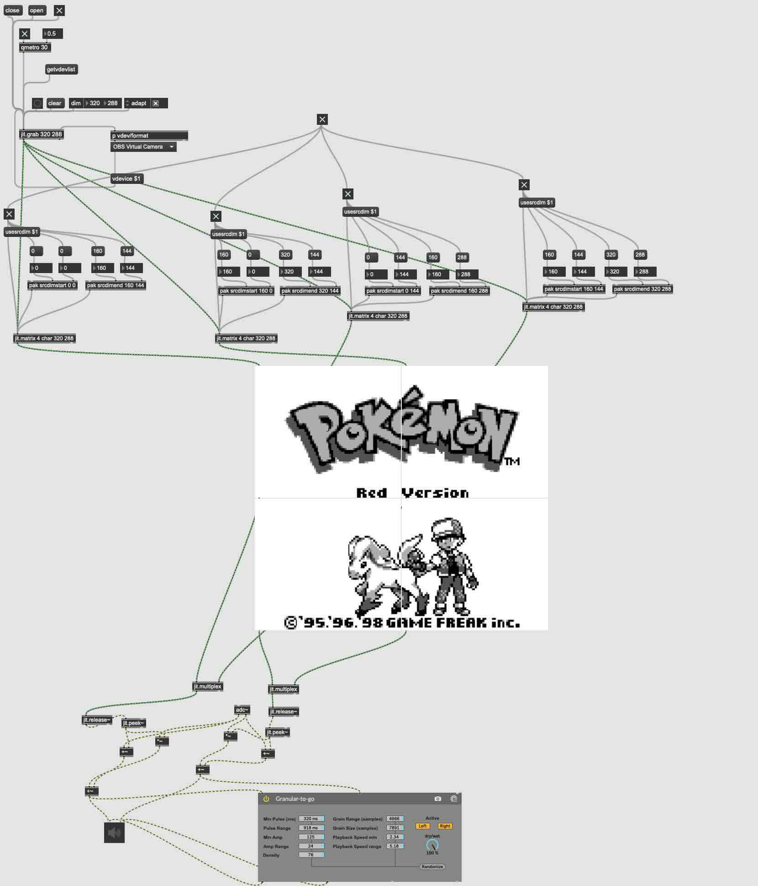

hytheaway
(.github.io)
pkmnMaxMSP (mar 2024)
how i fixed gen i.
github | youtube demo

alright let's explain this mess.
i've never been the best at max, but this is functional.
and sometimes that's all you can ask for.
this patch can be broken up into three major chunks: the top, the middle, and the bottom.
the patcher is centered around a camera - it won't do much of anything without one active.
---
the top.
- all the attached video devices are indexed by max with getvdevlist.
- then, a jitter object is created with jit.grab and its dimensions.
- the drop down box lists all the connected video devices (which were indexed earlier), and they're received by max
with the dimensions listed by the jit.grab object
which, after selecting the video device, is then sent back into the object to be portrayed onto the object's canvas.
- the jit.grab object (which is now just displaying whatever you've fed it) is sent to 4 jit.matrix objects which
take all those pixels you sent them and forces them to be 320x288.
- but wait! at the same time, each jit.matrix also gets fed some user determined coordinates. each jit.matrix gets
4 coordinates - a top left corner's x&y, and a bottom right corner's x&y.
- because either max or jitter or computers in general are not that good at being perfect, i also have a bunch of
buttons that force these dimensions in place, since they seem to get lost sometimes.
the middle.
this part is simple! we have 4 jit.pwindow objects, and the output of each of the 4 matrices gets sent to the input
of each pwindow, so it just displays whatever was already within that matrix. i have them arranged in this pretty
format, but they can be moved around, too. you may have noticed i did skip over one object earlier - the qmetro object.
in this case, it's just serving as a clock. each pulse pushes a new frame. i felt it was better to bring that up here
since it's easier to visualize.
the bottom.
this is where all the audio processing is, really. the pwindow objects output a matrix of data about whatever is currently
on the screen. the multiplexer object takes two matrices and combines them into one, and the release object takes a stream
of data and converts it into a signal. the peek object takes that signal and converts it into an audio signal, which is
then combined with the game audio signal (which is coming from the adc object), and then it's all sent to this cute lil
granulizer before finally being output.